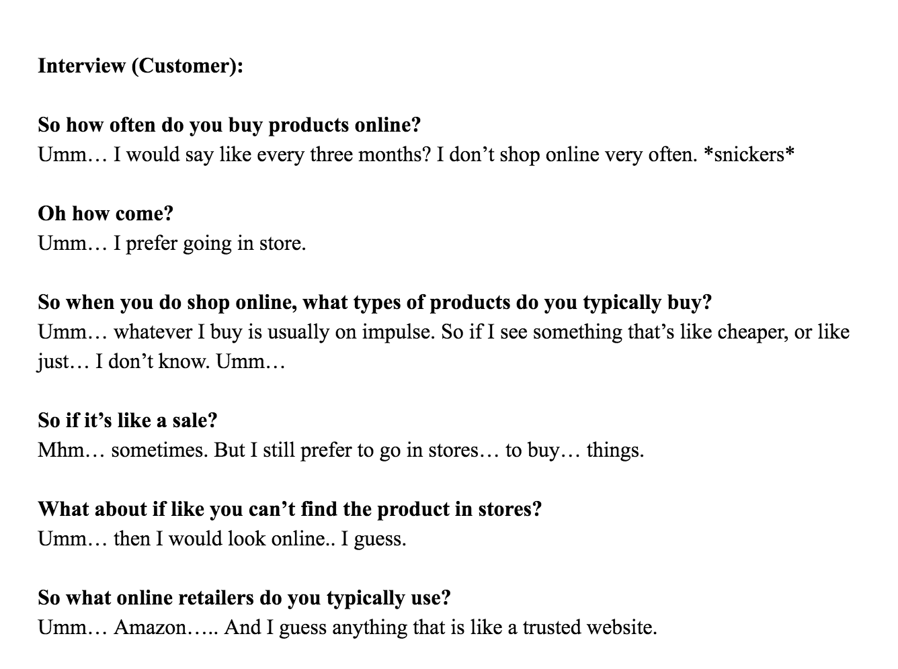
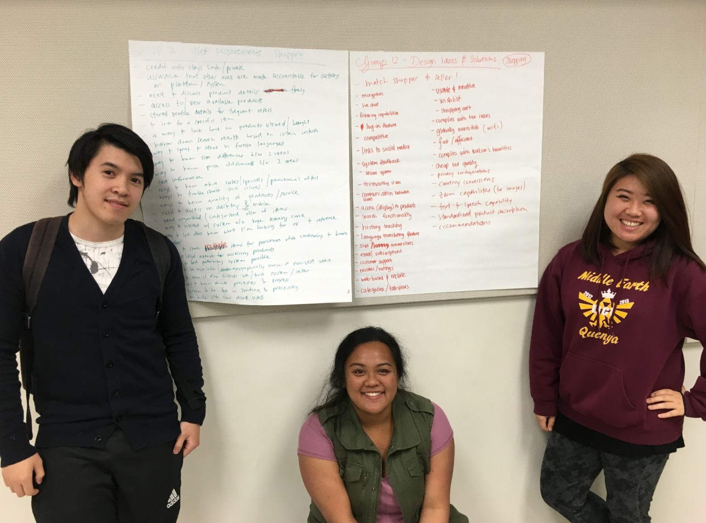
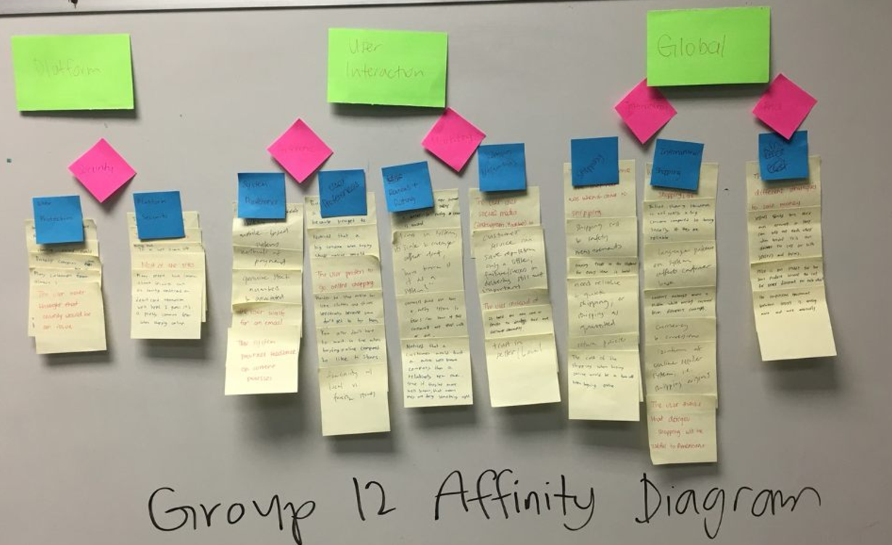
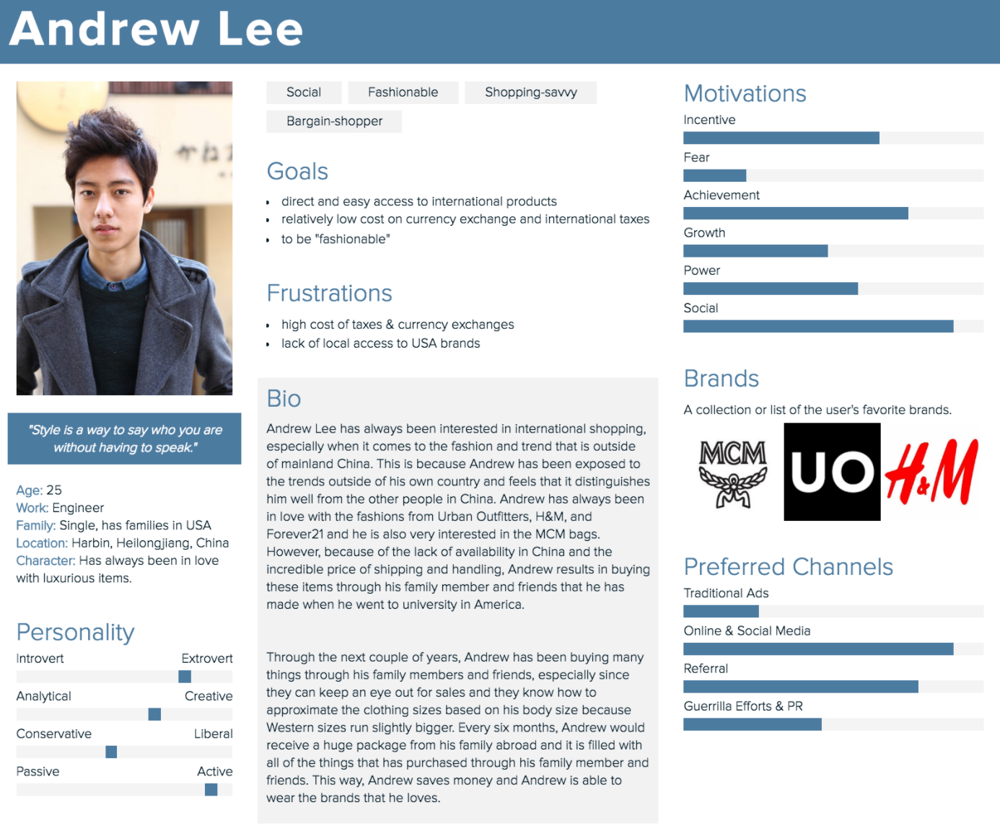
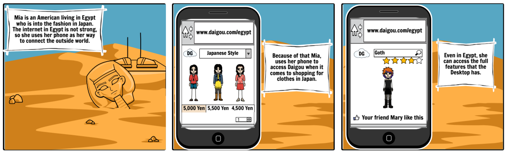

mad's portfolio
Daigou |
IntroductionDaigou is a term that means “buying on behalf”. I worked alongside four other students on this project where we had to create a prototype of a new system based on the topic given to us by the professor, which is “Clothing Shopping in Different Geographic Locations”. Although we struggled in the beginning, we were able to invent this system that makes shopping easier globally based on reviews. |
Data CollectionThe data collection consisted of my teammates and I interviewing random participants who are online shopping enthusiasts. The way the data collection is set up is that we would observe a participant buying/shopping online and from there we would conduct interviews. This collection would then allow us to form our own ideas and opinions regarding the system what we would want to create. |
 |
|  |
BrainstormingThe collection that we have gathered was able to lead us onto the next step, which was brainstorming. In this activity, we did three sessions of brainstorming, User Requirement, Design Ideas and Solutions, and Brainstorm with Non-Group Member. This activity really helped us clarify our problem space. |
* Affinity Diagram *The affinity diagram led us to to achieve different ideas/opinions/issues and organize them together to figure out the focus of our system and the constraints that comes along with the application. |
 |
|  |
* Personas *After successfully creating the diagram, my team and I were able to create personas with potential stakeholders of the system. |
* Storyboards *The creation of personas helped us in creating the types of scenarios that these “users” might run into. |
 |
PrototypeOnce the storyboard was created and everyone was on the same page, we dived into our last step of the project which is the prototype of the system. The “system” that we made using the InVision tool was able to bring alive our vision, our analysis and our constraints of the system. |
Results/Conclusions/ReflectionAs the last project that I participated in college, this project was able to let me understand the background work needed when it comes to creating a “system”. Every step that we took, from our research stage to the brainstorming activities was important to develop this intuitive system. |